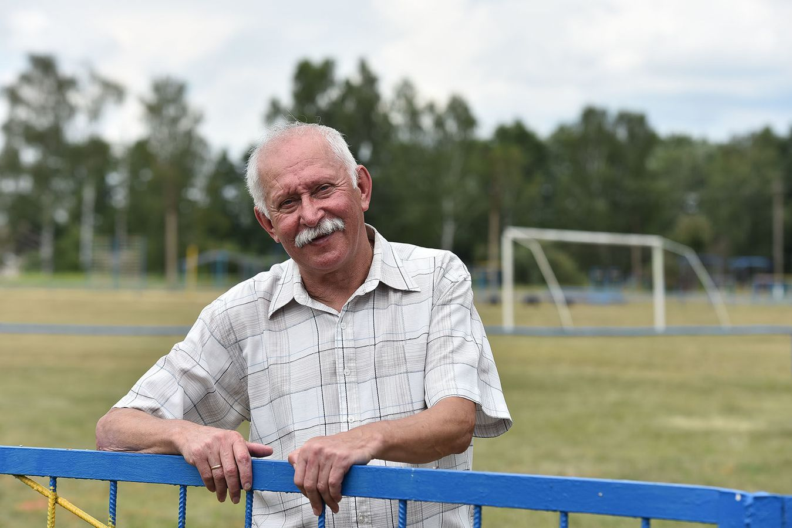

Бронза Олимпиады-1980
Николай Иванович Киров (род. 22 ноября 1957, Стрешин, Жлобинский район, Гомельская область, БССР) — советский легкоатлет, бегун на средние дистанции, мастер спорта СССР международного класса, бронзовый призёр Олимпийских игр.
Киров родился в небольшом белорусском посёлке Стрешин. Лёгкой атлетикой начал заниматься в юности, проявив способности именно к бегу на средние дистанции — 800 и 1500 метров. Его главным тренером был Аркадий Белый. Выступал за клуб «Локомотив» (Гомель). Уже в конце 1970-х Киров вошёл в число сильнейших бегунов СССР: в 1978 году стал чемпионом СССР в беге на 800 м, а также участвовал в установлении мирового рекорда в эстафете 4×800 м (результат — 7:08,1).
Пик карьеры Кирова пришёлся на рубеж 1970–1980-х годов:
Личные рекорды: 800 м — 1:45,11 (1981); 1500 м — 3:36,34 (1982). Эти результаты долгое время оставались ориентиром для бегунов на средние дистанции в Беларуси.
После завершения активной спортивной карьеры Николай Киров окончил Гомельский государственный университет. Работал в военкомате, затем перешёл в тренерскую деятельность — трудился в Гомельской ДЮСШ «Клён». В 2021 году ему присвоили звание «Почётный гражданин Жлобинского района» за вклад в развитие спорта и воспитание молодёжи. Даже после выхода на пенсию в 2022 году Киров продолжал участвовать в спортивной жизни — в частности, работал судьёй на соревнованиях по лёгкой атлетике.